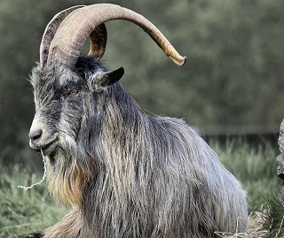

Conheça um pouco sobre essa raça de caprinos
As cabras Toggenburg têm o corpo longo, com costelas bem arqueadas e ventre profundo bem desenvolvido. O dorso lombar é direito e forte, e a garupa é larga, não muito caída. Os membros são fortes, secos e bem proporcionados, com cascos amarelos e fortes.
Leia mais